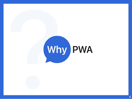

- Study on mobile users shows that 87% uses native mobile app and only 13% uses mobile web app. And the reasons are they get push notifications, click on it and you are back in to app (even if your application is closed). It provides home screen icon to start the app. It works offline (some part of the app). Access to native features like camera etc.
But we can bring all these in web also.
- Out of 87% users, 80% uses top 3 native apps only and average app install from appstore or playstore is 0.
- Study shows reach of web and mobile app : 8.9 million vs 3.3 million
- No problem like version issue, Once you deploy the latest build, everyone uses same latest version unlike app which needs user to update version.
- Unlike mobile app it doesnt need any installation or download
- Decrease in loading time once app has been loaded (due to caching by service workers)
Back